Making Corner Block
I built the city I think we're heading toward. Nobody walks the street at 2 AM. Life happens a level up, on terraces and behind lit windows, and the systems underneath run everything.
I directed it: the vision, the taste, and every keep-or-cut call. AI agents did the building in Blender and Three.js, the rendering and the checking, often overnight on my PC. At one point I told the agent, "This is 99% you."
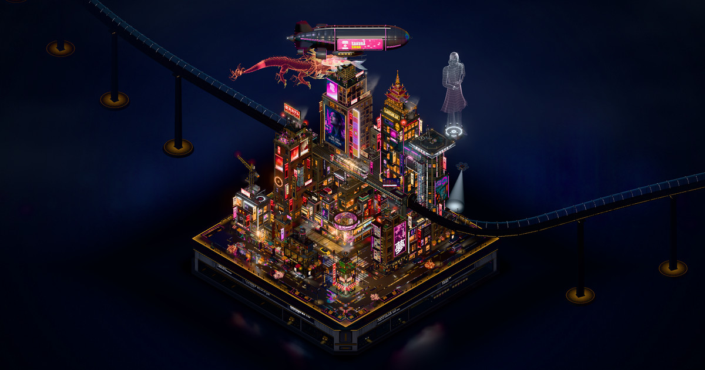
What it is
Corner Block is one web page. It draws a rain-soaked, isometric cyberpunk city block on a collectible display plinth, live in your browser. You can orbit it, zoom into any street, and jump between a few fixed views: the whole city, the district, the cinema and the junction.
The traffic is a simulation with a fixed seed, so it runs the same way every time. A train comes in from the distance through a glass tube and crosses the block on a raised viaduct. A hologram dragon circles the towers. An airship drifts overhead, glass elevators climb the towers, and a giant hologram figure stands on a rooftop deck.
How it was built
The city is a single Three.js page. The buildings, the train, the flying cars, the koi and the dragon are Blender models. Each one comes from its own script and is exported as a GLB file. The page adds the lighting, the rain, the wet-street reflections, the neon glow and the traffic.
The method is a loop, and I judge it by looking, not by tests.
- Find the biggest visible gap between the city and my reference renders.
- Build one scoped change.
- Render matched before and after shots from seven or more cameras: overview, back, left, right, top, street and close-ups.
- Critique them. For the hero assets, let the Blender agents iterate.
- Accept or reject. Then verify before promoting: the traffic simulation has to reach the same state, there can be zero errors at four screen sizes, and the frame time can't get worse.
Every so often a separate AI art-director pass measured the city against the references and re-ranked the gaps.
I started the project in Codex. When the Codex usage ran out on 30 September 2026, I moved it to Claude Code and kept going. The agents worked from 59 reference images, including a run of ChatGPT renditions of the block that I supplied.
A few rules I set early and kept: no people on the streets, only on the terraces. No clutter on the roads. Nothing floating without a purpose. The flying cars never intersect anything. They are why the streets read clean.
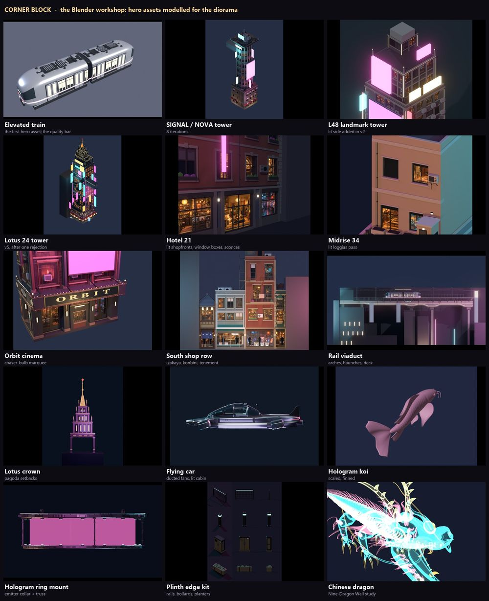
The biggest changes
These are real before and after renders from my log. The run number is the step in my notes. By Run 240 the log held 173 numbered runs, and I had rejected 20 of them.
Light and wet streets, Run 64 to Run 84
Run 64 was the checkpoint I accepted. It changed one light: the street fill went from 1.50 to 3.25. A first try at 5.0 flattened the detail, so I backed off.
After that the loop started. It added signs, light spilling onto the pavement, wet dark paving, a deeper plinth, steam, wet roads and bloom. By Run 84 the night grade and the mirror floor were in. I threw out plenty too. A masonry pass in Run 65 moved the picture by 0.07 out of 255. That counts as no change, so it went.
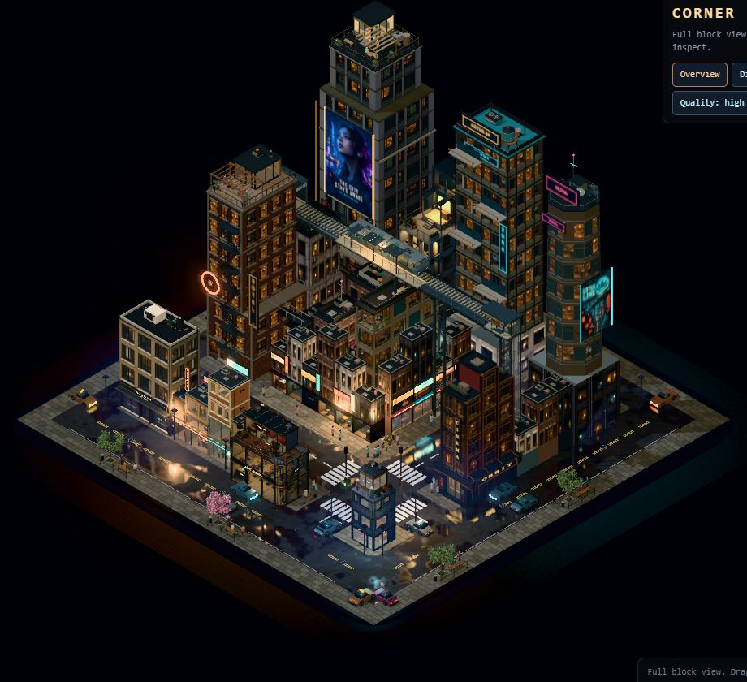
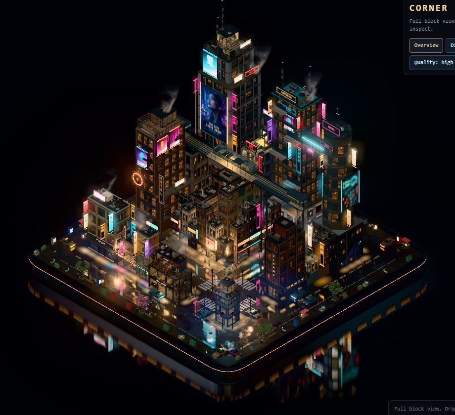
Rain, and people
By Run 97 the street had rain, umbrellas, live neon and headlights. People walked here then. Later I ruled that no one walks the street at all. Life moved up to the terraces.
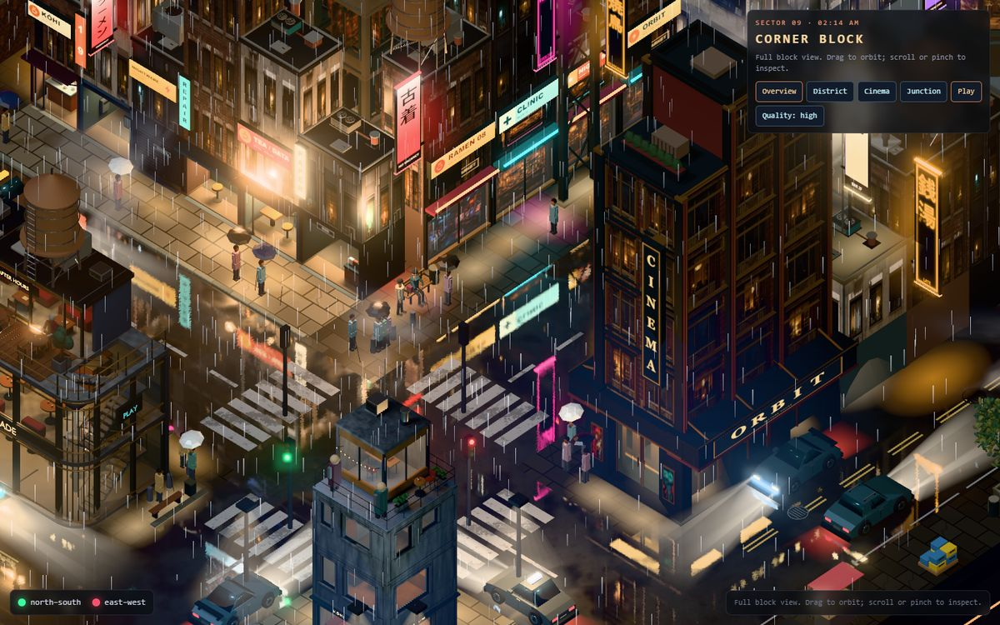
The backdrop, and the lag, Run 148 to Run 157
Around Run 136 the city got a studio backdrop. I looked at it and told the agent it looked disgusting, and that the flying cars sliding in and out of frame looked wacky. The backdrop was rebuilt in Run 150, and the flyers got lanes that start and end off frame.
Then I told the agent the city was lagging a lot. In Run 155 it removed 681 clutter meshes, and that is where the standing rules above came from.
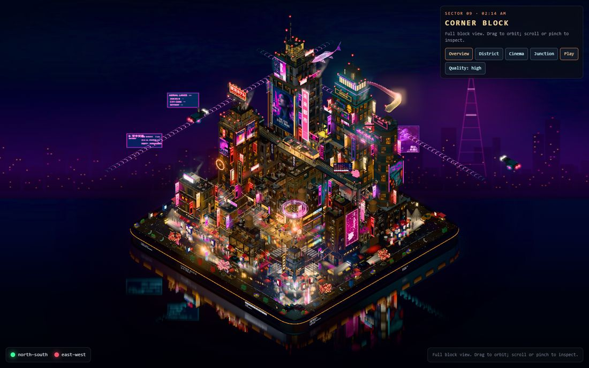
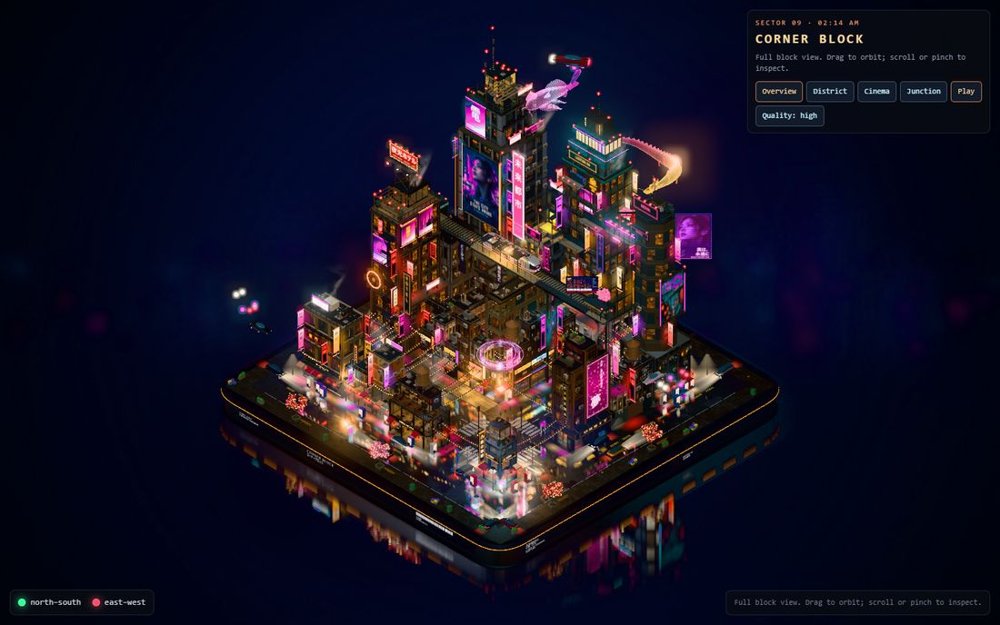
The train, and building like the train
The Blender train in Run 157 set the bar. It is 19,616 triangles. I told the agent, "The train was exceptional. I loved it. Can you do more like that?" I also told it the buildings needed proper meshes, built the way it built the train.
The agent measured every building, ranked them by how visible and how flat they were, and rebuilt them in Blender one at a time: a midrise, the signal tower, the hotel, a landmark tower, the viaduct, the shop row, the cinema and the Lotus 24 tower. The first six rebuilds cost nothing in frame time: 57.0 ms against 57.1 ms over seven interleaved rounds.
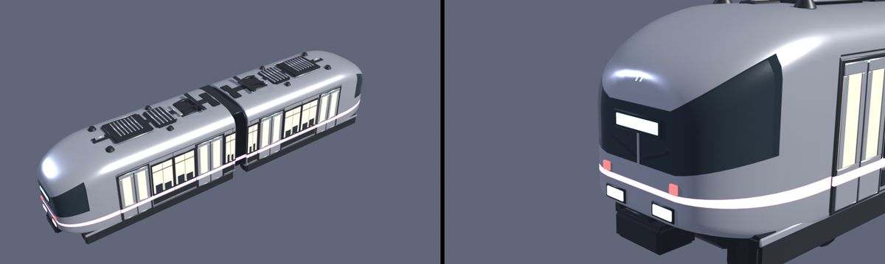
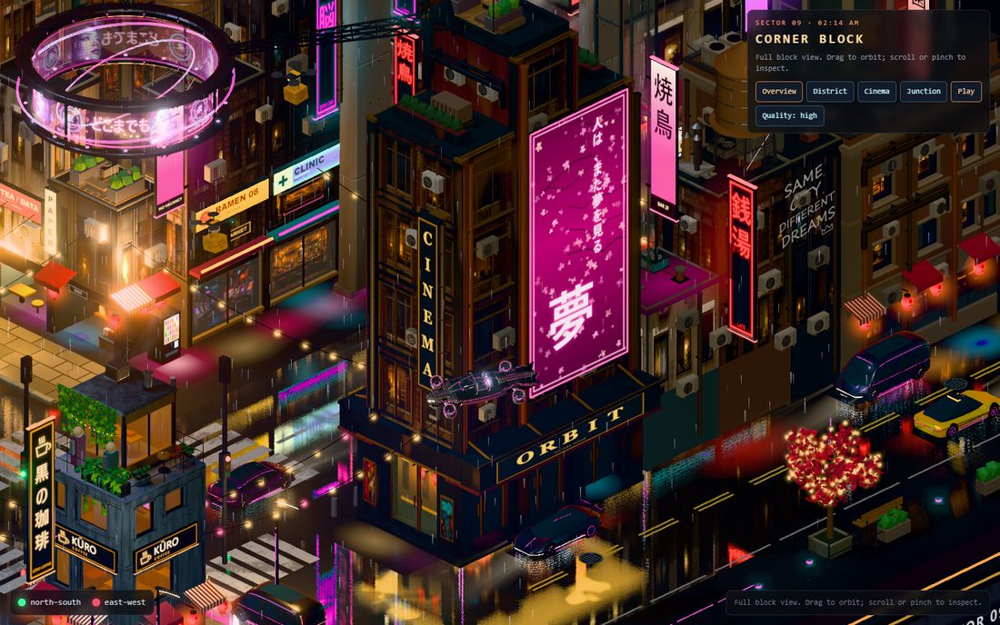
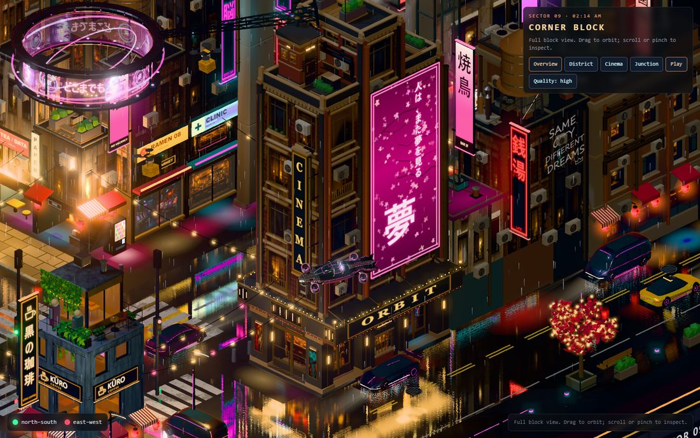
The dragon
The first dragon looked like a worm. I said so, and it got a Blender head and legs. The face still looked a little weird to me. An art-director pass found the cause: the shader bent the head about 29 degrees and stretched it 1.55 times in one direction, so every re-sculpt arrived squashed. The fix was a rigid, uniformly scaled head.
Then I asked the agent to go online and research how a Chinese dragon is made properly. It came back with the Ming Nine-Dragon Wall: an ink-black open mouth, contrast over scale, saw-tooth teeth. Run 233 shipped that face. The eyes were next. I said they looked bubbly, like goldfish eyes. They became deep-set slanted almonds with a glowing gold slit.
A rejection that taught me something
The crown on the Lotus 24 tower looked fine in the Blender preview and failed in the scene as a dark grid. I rejected version 4, and version 5 fixed it. Later I looked closer at the gold crown and called it low-poly, low quality and sloppy. It was rebuilt as a detailed pagoda with lacquered crimson tile roofs and gilded trim.
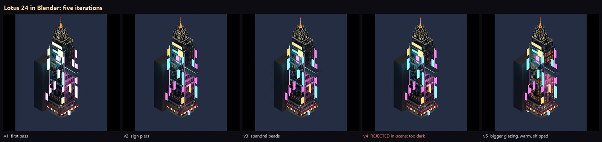
The flying cars
I told the agent the futuristic flying cars were good but could get better, definitely. The next version got a lit cabin with a pilot and ducted fans. Later the agent rebuilt them again, as a pearl coupe with magenta underglow and an orange taxi.
A city that felt dead
After the realism passes I watched it live and said the quality was up but the city felt dead: "there was so much more stuff." That was not a rollback. It was a call for more life on top.
I approved a whole wave of it: drones landing on roof pads, glass elevators, a rooftop crane, living windows, video billboards, an ad airship, a rooftop bar with a DJ, street-sweeper robots, rain swells with lightning and synthesized city sound. Everything except birds. Then I handed over the PC for the night. Eleven agents ran in parallel, held back by a memory guard so the 16 GB machine wouldn't thrash. The elevators, the crane, the airship and the lightning made it into the city.
I also said the back of the block looked a little boring. I wanted something perpetual, a loop, a good surprise when people look back. The agent built the city's source code: a data waterfall that only fades in when you orbit round to the back.
The hard problems
Speed
The frame is draw-call bound, at roughly 1,100 to 1,500 draw calls. When I said the city was lagging, the cleanup in Runs 154 and 155 took the frame time from 82-85 ms to 59-64 ms, about 28 percent. Run 162 made the mirror passes emissive-only and took the frame from about 44.6 ms to 36.6 ms. Run 269 cut CPU frame time by 16 percent, because hidden objects no longer got recomputed every frame. Run 292 halved the time to the first frames.
Those numbers come from headless runs at 1280x720 on an integrated AMD GPU, with the PC often busy. I trust them as comparisons inside one session, not as a score.
Several speed ideas did nothing, and I threw them out: culling the shadow pass, culling the road mirror, and merging the material tables. One bad promotion got through once and the verify step caught it, which is why verifying comes before promoting.
The dragon was a switch for a while, because I thought it took a lot of rendering. Now it is always on.
Bugs you cannot see
Some of the worst problems showed no error at all. The cream "clouds" on the street were road clear-coat. The beige ground on the back was specular sheen. The flying cars sat frozen at time zero because of a hidden-mesh hook. A mirror pass kept re-showing a hidden dragon from Run 160 until Run 231 caught it. Bad values blacked out the whole frame twice, in Runs 90 and 149. I found each of these by bisecting, not guessing.
Phones and memory
On a phone the full city runs out of memory and iOS Safari kills the tab. So phones go to a lighter page: a looping recording of the live city, with the camera orbiting the block.
I am building a phone mode to change that. On a test page, it brings the memory estimate for the city from about 1,420 MB down to about 582 MB. It does that by capping textures at 1,024 pixels, sharing duplicate textures, freeing the CPU copies of images after they upload, and halving the render targets. The phone asset set is 117 MB, against 190 MB for the full one. The desktop city does not change.
It has not run on a real iPhone yet, and those figures are estimates from my own memory probe, not Safari's. Until it does, phones get the recording.
My own PC hit the same wall. With nine agents running at once it lagged, so I capped it at six.
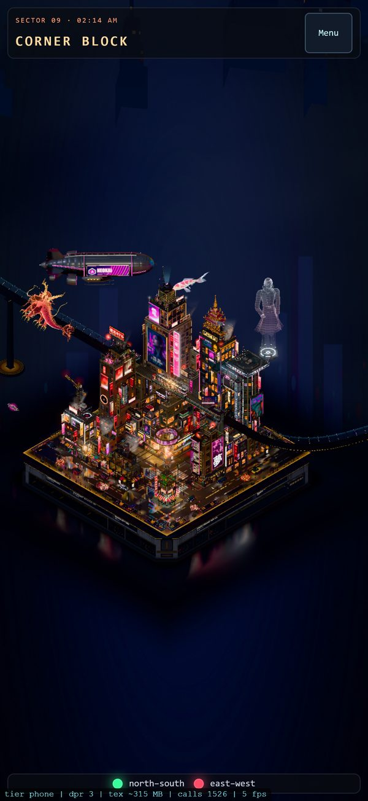
See it
The live city builds the whole block in your browser, so the first load takes a minute or two. Best on a desktop with a graphics card. On a phone, use the phone page.